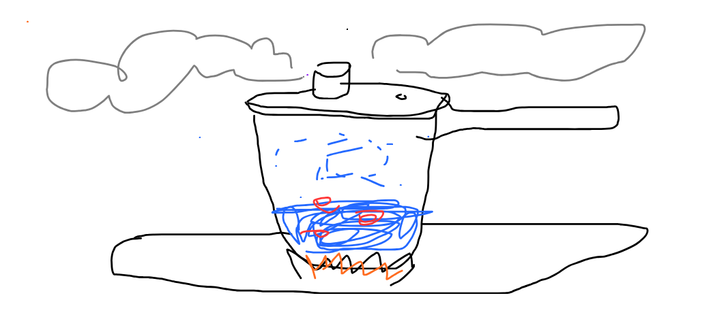
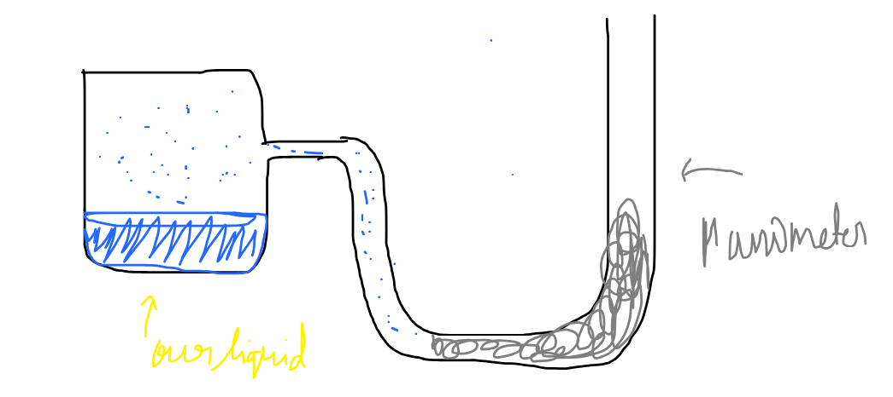
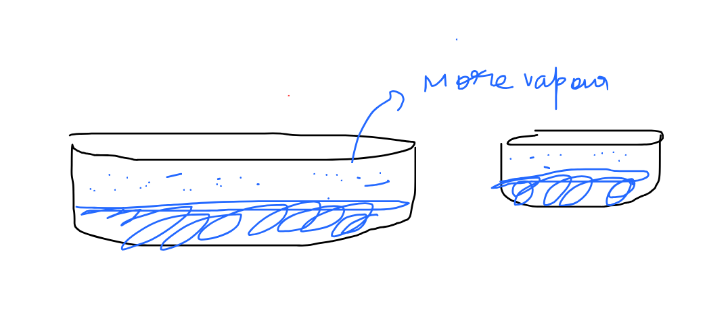
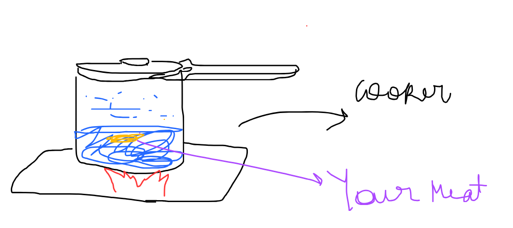

Pressure coooookkeerrr!!

How does a pressure cooker even work, and why do we need it excactly?
Pressure cookers are a miracle, without it people would have been cooking for hours Usually pressure cooker, as the name applies work on the principal of vapour pressure and Bioiling point definition.
What is vapour pressure and Boiling point
Hmm Definition of vapour pressure its a bit confusing but lemme tell, Every vapour exerts a pressue???? What??
Imagine a container
In the container there is some liquid and since there would be a certain temperature, now if the container is open then the molecues of tother than liquid like of the gases and air would collide, and make the surface molecules of the liquid gain energy due to which they leave the surface and form vapour. But if the container is closed, this would occur, but if the molecules would touch the walls of the continner due to inelastic collision they would loose the energy and then they would, again condensate and form the liquid. now At the specific time, when the rate of evaporation = rate of condensation, then the pressure of the vapour of that liquid measured at that time is known as vapour pressure!

So the pressure measured at equilibrium for this system is the vapour pressure of the liquid
Now i would like to ask you some few questions
Question 1: Does the vapour pressure depend on temperature?
The answer is yes, since if the temperature is high , then the molecules have more kinetic energy means more escpaing and more vapours being formed, increasing the vapour pressure
Does the vapour pressure dpeend on nature of Liquid?
Hmm Yes, since, imagine a liquid with stong intermolecular force, it would be hard to make that escape into gas, then with a liquid with high intermolecular force
What about Surface area?
As the surface area increase we could see more vapours, so the vapour pressure incerease! Nope, thats not the correct way to see this.

Since pressure is defined per unit area, so the perunit area is the same, the thing is as the vapours increased force increased but so is the area so the vapour pressure remains the same
Coming on Boiling Point
Since boiling point is the special point where we say that the vapour pressure of the liquid becomes equal to the External pressure of the container.!
becuase in this defintion we can explain many things, if the water boils it leaves the surface, which means the vapour pressure is excatly equalt to the atmospheric pressure, in ideal condition but as we see in home, the vapour presure tends to not follow quasistatic(always equilibrium) process and then it boils and convert to vapour!!
So How does Pressure cooker works and why do we need it?
Sence, the pressure cooker increases the pressure, so since vapour pressure inside the cocker increases, the Boiling point of the water which is used to cook increases, hence the water boils at higher temperature making the vegetables and your meat (sus) smooth :D So now you see why people in higher area use this, cause due to low in atomphoseric pressure, the boiling point of water decreases, and the water is boiled without cooking the vegetables so thats why we use cocker
